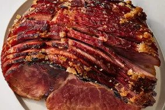

HAM

Description
A delicious baked ham recipe that my family loves.
Sweetly seasoned ham roasted with moist heat is a delicious way to celebrate special occasions
Ingredients
- Ham: You'll need the rump portion of a bone-in ham.
- Cloves: Whole cloves add warmth and a certain depth of flavor
- Sugar: Brown sugar lends more warmth and welcome sweetness
- Water: Use about an inch of water
Steps
- Preheat the oven to 350 degrees F (175 degrees C).
Place ham in a large roasting pan; press cloves into the top at 1- to 2-inch intervals.
- Pack the top with a layer of brown sugar
- Pour enough water into the bottom of the roasting pan to come to a 1-inch depth;
cover the pan tightly with aluminum foil.
- Bake in the preheated oven for 4 1/2 to 5 hours
- Let ham rest for about 20 minutes before carving